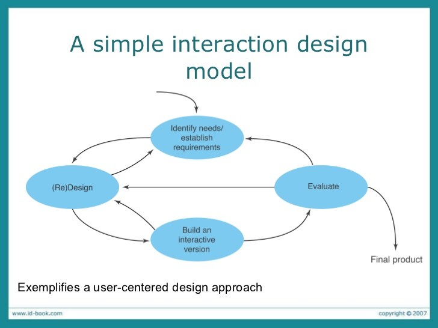
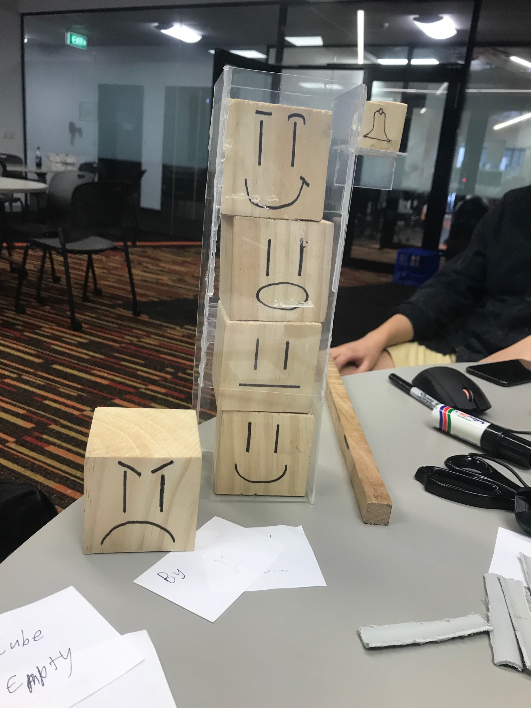
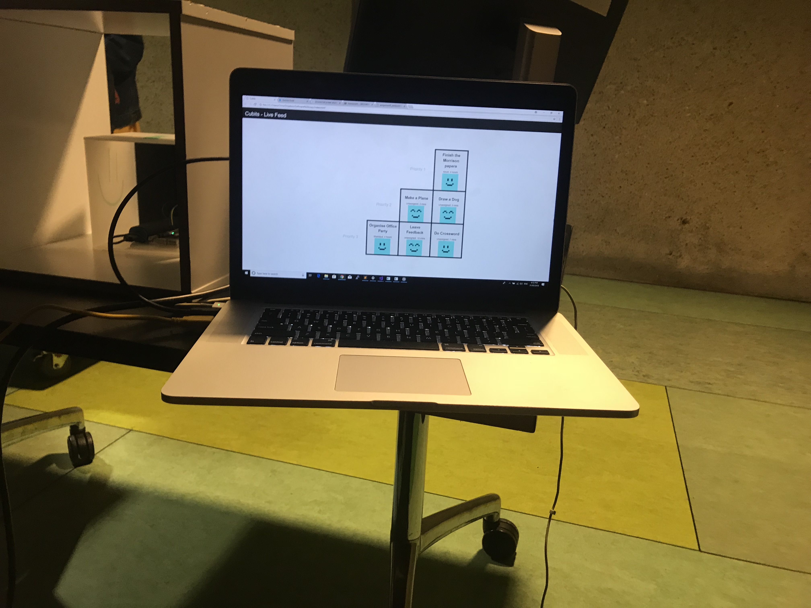
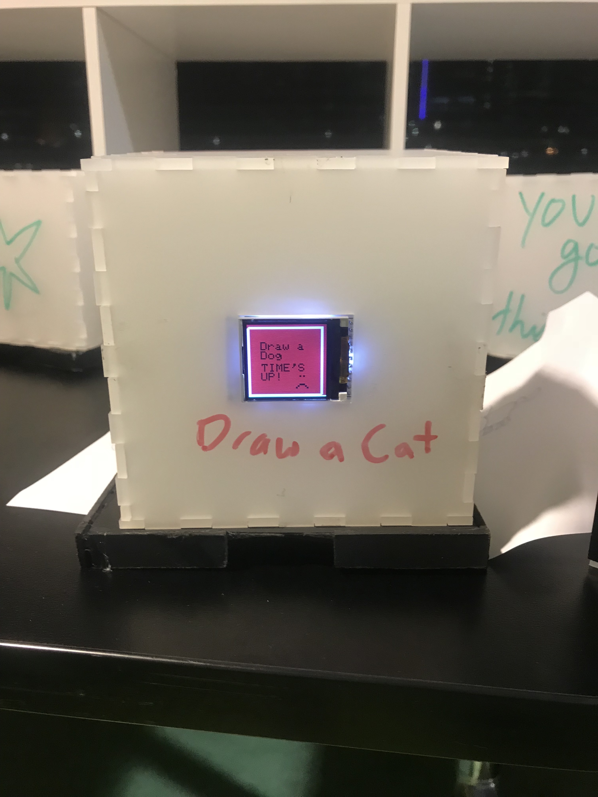
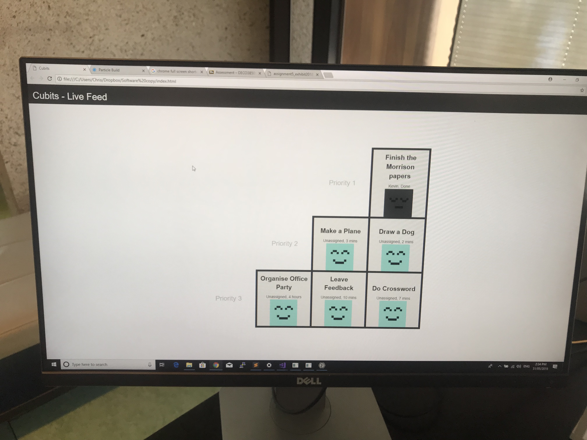
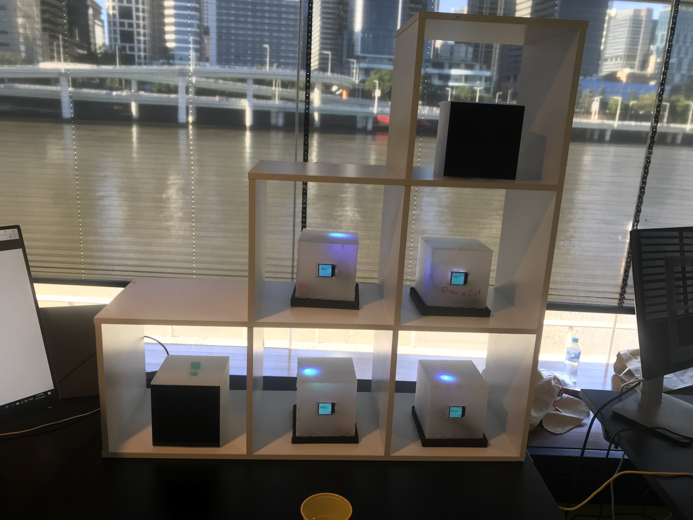
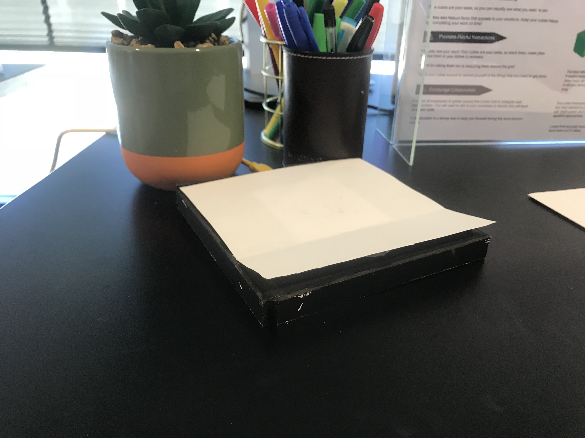

Process
Introduction
The group followed a traditional 4-step design process found in many design thinking and HCI books: gather requirements, define alternatives, prototype, then evaluate. We complete these steps in a cycle. We iterate on the design frequently given new user feedback.
Roles
As the group 'manager', I organised and facilitated group meetings. Organising group meetings means ensuring that the group is on track to deliver for that week and making sure that we address all issues and concerns. I would keep track of progress and change strategies for providing a product when necessary.
I was the primary facilitator between the group and Redback Technologies, an energy company that develops cloud-based software. I conducted an ethnographic study there observing how tasks are delegated, distributed, and how they progress through the week. I also frequently sought advice from co-workers on how we should design the product.
First, I conduct a literature review of the problem space. I found similar products such as Trello and VSTS, as well as underlying research the products drew inspiration from, such as Agile development and the Kanban Board.
As a group, we had the idea of pairing up tasks with the leading member, and an assistant. Pairing up tasks means that one person is not solely responsible for a job and that one can always ask the other for assistance. I was the assistant to two tasks: crafting the prototype and constructing questions for the usability test. I made it clear that we should not go overboard with creating a prototype. We should build the absolute minimum we need to test with real users. As I have previous experience in usability testing, I advised another group member in constructing the right usability questions and developing a test protocol.
I worked with my group partner Nikhil frequently when developing the hardware. Nikhil was responsible for constructing ways to implement hardware functionality, and for wiring up the peripherals such as the TFT screen and the RGB LEDs. When he completed the hardware wiring, I would begin developing the underlying software to make all the peripherals work together.
Richard and Damian were both designers, so they focused on work such as promotional brochures, posters and videos. They were also responsible for conducting usability tests to generate feedback for the design. Damian made key decisions on what the faces, sounds, and colours users would respond most to.
Process
I explored how we can find new ways to motivate users to complete their tasks. Harkin et al. (2016) conducted a meta-analysis of 138 studies to analyse if monitoring goal progress increased the likelihood of reaching goals. The conclusion was that results overwhelmingly confirmed this hypothesis. The more goal monitoring that took place, the higher the chances were of success. They also found that making goal monitoring more public helped individuals to motivate themselves to reach their goals. I had the idea to introduce an accompanying UI that lets the team actively monitor their progress publicly. A public monitoring system means enhanced accountability for all team members, which in turn increases motivation to complete the task.
I looked into more research about what to consider when introducing new technology in the workplace. Enterprise environments are stereotypically known for not being open to change, so it is essential to understand why this may be the case. Orlikowski (1992) tried to introduce a time management application into a workplace, but the adoption rate was weak because they forgot to account for three things: have a clear reward system, adhere to company policies and procedures, and targeting the application, so it suits workplace culture as well as work norms.
What can Cubits do to better adhere to social norms in the workplace? Treude (2009) explored how software developer utilise tagging as a way to communicate informally with other team members: “While there are many formal processes in place for technical artifacts, managing social artifacts is only supported by informal processes” (Treude, 2009). Therefore, open-ended interactions are critical to the adoption rate of a product.
I had the idea to utilise the properties of the acrylic cubes by introducing markers as the regular workflow. Every Cubits device would come with markers in which users can draw on the cubes. Drawing on the cubes mean that informal processes are made available, making the device more adaptable to specific cultural norms of a workforce.
To pitch my concept to the class for feedback, I created a 15-minute presentation summarising the research I had found and the latest iterations we had made on the design. Feedback from the presentation revealed that the concept was very ambiguous in how it solves the problem of collaboration and communication. They felt that the idea that each worker had their own set of cubes was very restrictive to goal monitoring and collaboration.
With this in mind, we had to revise the concept. We devised a system in which all cubes would be made available to everyone at a public shelf. Users would take the cube from the shelf and place it on their personal platform. To solve the problem of tracking down the status of each cube, we planned to have an accompanying digital live feed which updates according to the status changes from each cube.
My responsibility was to code the live feed, given my expertise in HTML, CSS and JavaScript. I left loading tasks into the cubes outside of the scope of the exhibit, so I used hard-coded task names and hours to demonstrate the functionality of the live feed.
I have prior knowledge of embedded hardware and the C programming language, so I developed the software for each cube. Each cube has a Particle Photon inside, which uses TCP communication to send signals to the live feed. I programmed the timers, colours, and TFT screens to ensure they all synchronise with each other and the live feed.
Product
Here is a promotional video created by the other group members:
First, look at the digital live feed. The live feed will display at a glance what cubes need completing, how many hours they will take, and who is working on what task.
The shelf corresponds to the visualisation on the live feed. Find the cube that you would like to work on, and pull it out. The timer ticking down the time left to complete automatically starts as soon as you pull it off.
To signal to others that you are working on the task, place the cube on your platform. The platform detects which task has been placed upon it and updates the live feed accordingly. As time goes down, the cubes will signal using colour, sound and the on-screen faces, how much time you have left.
If at any point you would like to pass on the task, give the cube to someone else so they can place it on their platform. The live feed will update with the new assignment.
When the task is done, place the cube back on the shelf in the same position where you took the cube. The live feed will signal to the others that the task is completed.
References
C. Treude, & M. A. Storey. (2009). How tagging helps bridge the gap between social and technical aspects in software development. In 2009 IEEE 31st International Conference on Software Engineering (pp. 12–22). https://doi.org/10.1109/ICSE.2009.5070504
Harkin, B., Webb, T. L., Chang, B. P. I., Prestwich, A., Conner, M., Kellar, I., ... Sheeran, P. (2016). Does monitoring goal progress promote goal attainment? A meta-analysis of the experimental evidence. Psychological Bulletin., 142(2), 198–229.
Orlikowski, W. J. (1992). Learning from Notes: Organizational Issues in Groupware Implementation. In Proceedings of the 1992 ACM Conference on Computer-supported Cooperative Work (pp. 362–369). New York, NY, USA: ACM. https://doi.org/10.1145/143457.143549